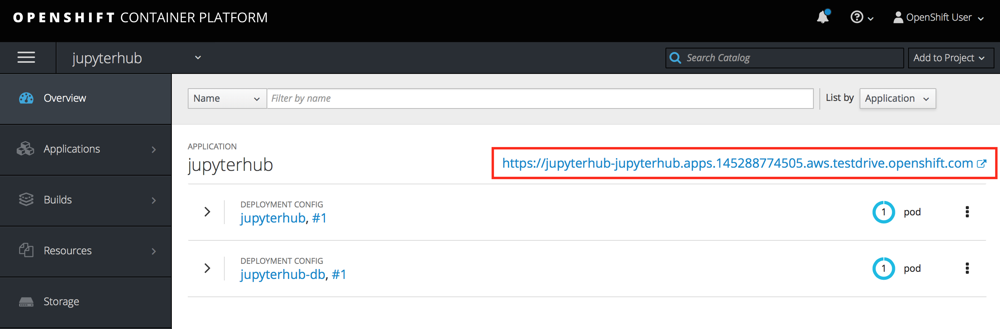
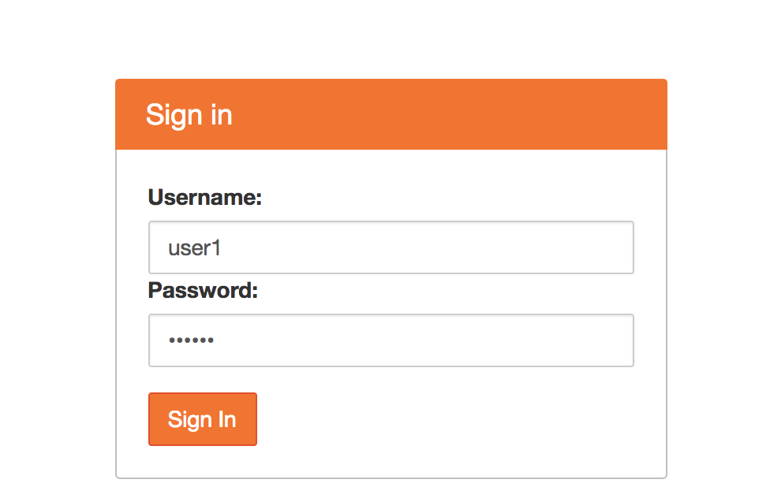
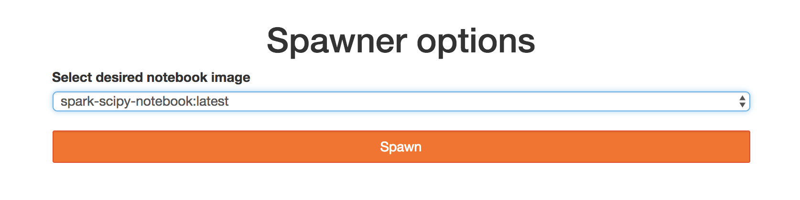
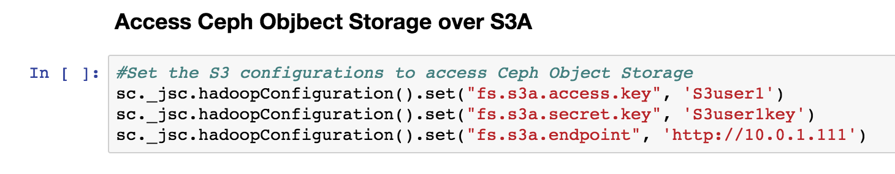

Module - 4 : Analytics on Metrics Data#
Module Agenda
- In this module, you will be doing basic analysis of a Metrics data set from Prometheus
Prerequisite
- You need to have completed Modules 1-3 before beginning this module
-
The instructions for this excercise are available as Juypter Notebook (
.ipynb) that you can download from here (Right click >> Save Link Asipynb) -
An active JupyterHub instance is required to open this notebook. Use the JupyterHub application that you have deployed in module-2.
- Login to the
OpenShift Container Platform Consoleand click on the JupyterHub application endpoint URL from the Overview screen.

- Use the following credentials to login into the JupyterHub application
User Name :user1
Password :79e4e0

Important
If JupyterHub did not deploy cleanly, refer to the troubleshooting steps in Module 2 to redeploy.
-
On Juypter, select
Start My Server -
Select the
spark-scipy-notebook:latestnotebook image

-
Click
Spawnand wait for your notebook server to start, this may take a minute -
Once the notebook server has started, you will see a folder view of the notebook file system
-
Click the
Uploadbutton to the right

-
Find the
Ceph_Data_Show_Lab_1.ipynbnotebook file you have downloaded at the start of this module and upload it -
Click on the
Uploadbutton to finish uploading the notebook to JupyterHub
-
Select the
Ceph_Data_Show_Lab_1.ipynbnotebook to begin analyzing the data

- Review the section
Access Ceph Objbect Storage over S3A, the configuration here should look like this

- Before running any of the cells in the notebook, select the first cell (the beginning of the notebook). Once the first cell is selected, click the
Runbutton in the toolbar on each cell, stepping through the notebook and its results
End of Module
We have reached the end of Module-4. In this module, you downloaded a sample Jupyter notebook exercise, uploaded it to JupyterHub and used it to analyze Prometheus data stored in Ceph. In the next module you will use machine learning libraries to train a model to detect the sentiment of a customer trip report.